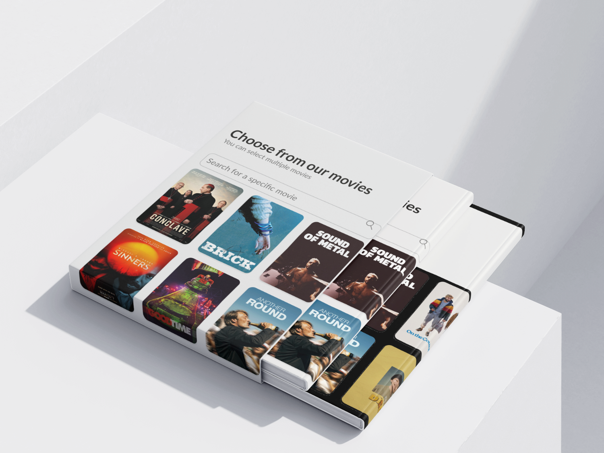
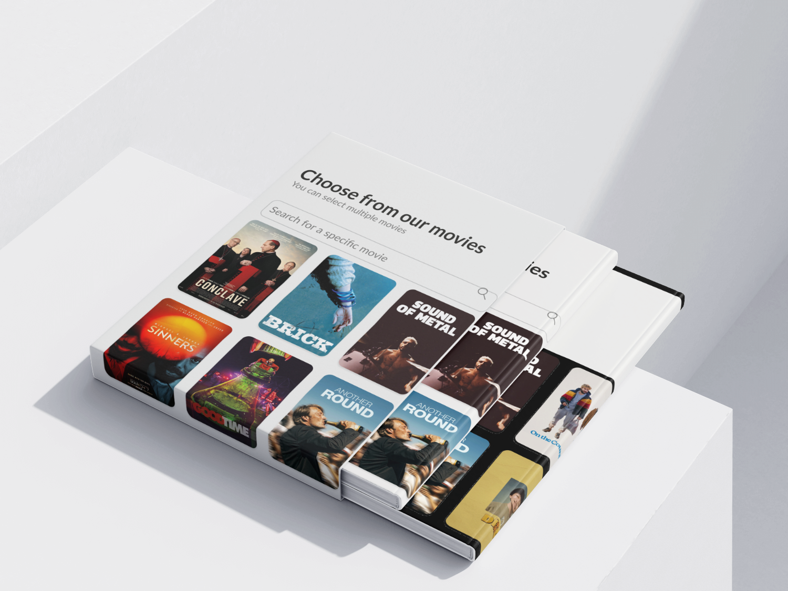

Brightfish Campaignplanner
Een webapplicatie waarmee adverteerders eenvoudig bioscoopcampagnes kunnen plannen, budgetten berekenen en begeleiding krijgen via een AI-chatbot.

Het concept
Brightfish wil lokale bedrijven en KMO’s helpen die nog nooit bioscoopreclame hebben geboekt. De Campaignplanner is een digitale tool die hen stap voor stap begeleidt bij het samenstellen van een campagne, van budget en targeting tot het kiezen van de juiste films en formaten.
Het doel
Een gebruiksvriendelijke, Engelstalige en GDPR-proof webapplicatie
ontwerpen die:
– adverteerders begeleidt bij het plannen en berekenen van hun campagne;
– ondersteuning biedt via een geïntegreerde Botpress-chatbot;
– zowel standalone als binnen de bestaande Brightfish-website kan draaien.
Het proces
Moodboard
Kleuren, sfeer en fotografie geïnspireerd op bioscoopervaring, licht, zitrijen en filmplakaten.

Kleurenpalet
Een palet met duidelijke rollen: accent, action, communication, anchor en neutral.
_imgupscaler.ai_General_4K.jpg)
Database & flows
Een onderliggende database-structuur die campagnes, locaties, films en timings koppelt.

Wireframes & structuur
Low- en mid-fidelity wireframes om de stappenlogica en filters te testen.


Het resultaat

Project Showcase
 (1).png)
 
